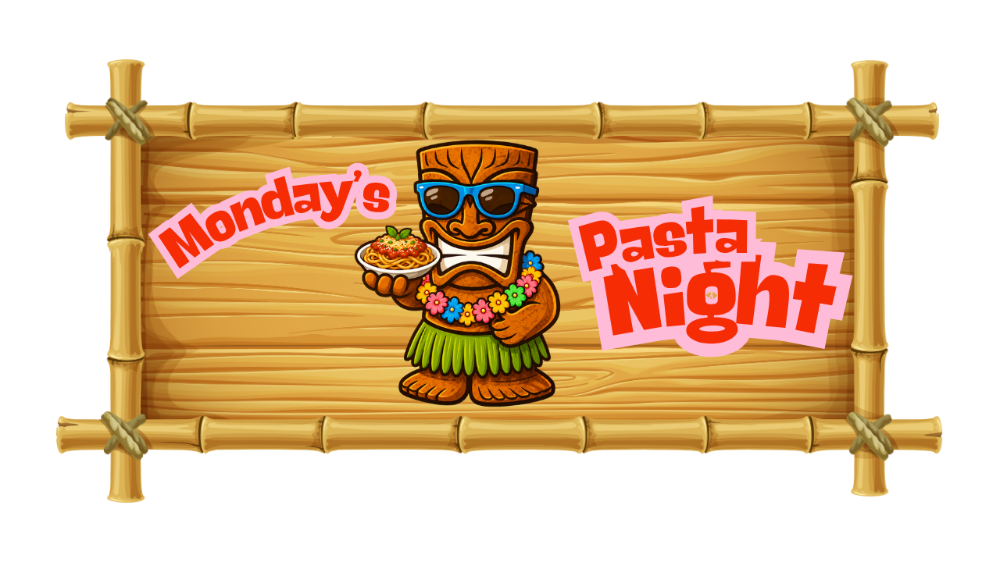
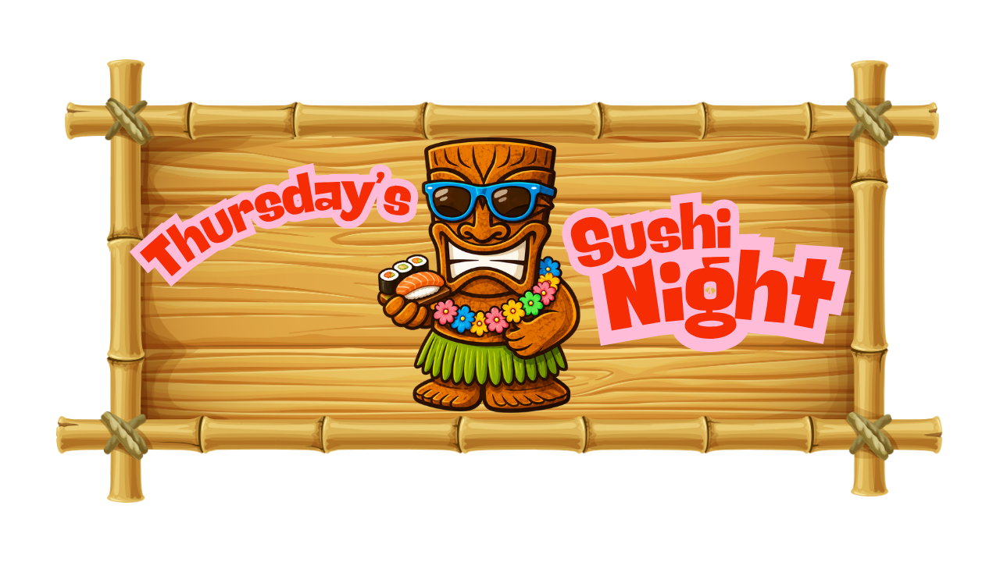
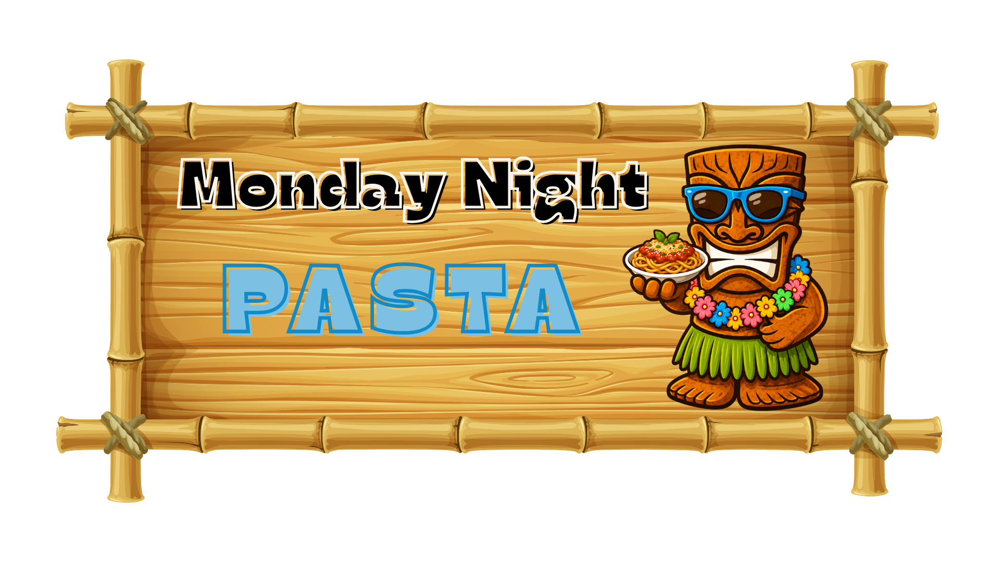
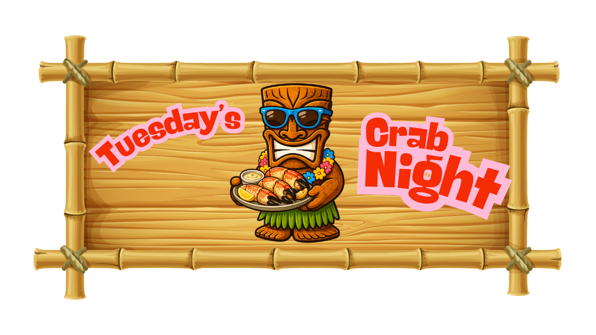
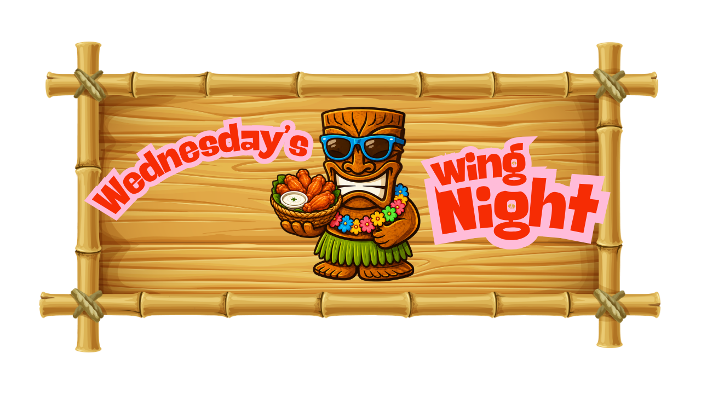

TONIO'S
SPECIAL NIGHTS
Some nights deserve their own menu. Monday & Thursday Sushi · Tuesday Crab Night · Wednesday Wings Night. A different reason to come back every week.


SUSHI NIGHT
Mondays & Thursdays at the ShackTwice a week, Tonio's rolls out fresh sushi, Keys-inspired combinations and signature favorites. Whether it's a Monday pick-me-up or Thursday night out — we've got you covered.
Menu selections and availability may change based on the freshest ingredients available.

Available MondaysPASTA NIGHT
Every Monday at the ShackEvery Monday Tonio's goes full Italian. Rich sauces, fresh pasta and Keys-inspired twists on the classics.
Side salads available as an add-on.
Menu selections may vary. Ask your server about tonight's pasta specials.

Available TuesdaysCRAB NIGHT
Every Tuesday at the ShackTuesday is all about the crab. From stone crab to snow crab, crab cakes to crab-stuffed anything — if it's crab, it's on the table Tuesday night at Tonio's.
Crab availability is subject to season and daily catch. Stone crab is available mid-October through mid-May.

Available WednesdaysWINGS NIGHT
Every Wednesday at the ShackHump day calls for wings. Crispy, saucy and piled high — Wednesday nights at Tonio's are all about the wings. Pick your sauce, grab a cold beer and settle in.
Wing sauces and specials may vary weekly. Ask your server about Wednesday's featured sauce and deals.